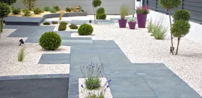
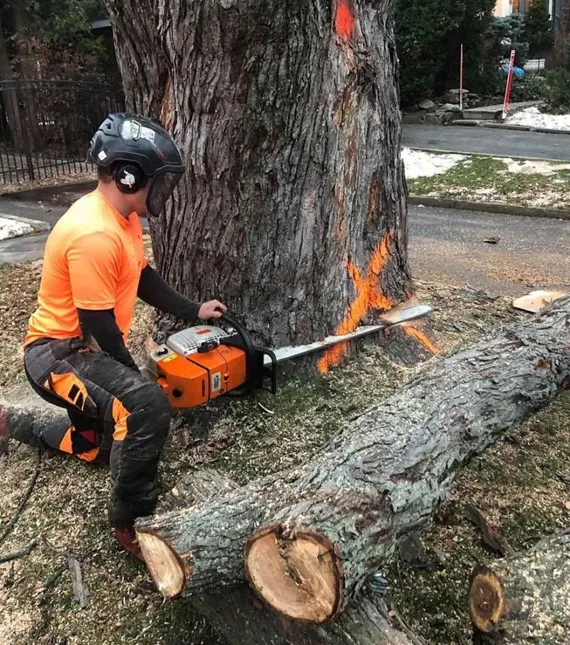

- Accueil
- Zones d’intervention
- La Madeleine
Le Ch’ti Élagueur : Votre jardin sur-mesure à La Madeleine 59110
Élagueur à La Madeleine · 59110
Chez le Ch’ti Élagueur, chaque coin de verdure devient une toile vierge pour exprimer votre style à La Madeleine 59110 ! Nous ne faisons pas que planter des fleurs et tailler des buissons, nous sculptons des paysages uniques qui racontent votre histoire. Notre équipe d’experts en paysagisme est là pour comprendre vos envies et les matérialiser avec brio, le tout sans que cela ne pèse trop sur votre budget. Avec nos devis paysagistes détaillés, vous recevrez bien plus qu’un simple montant, mais une vision concrète et personnalisée de votre futur jardin, où chaque plante, chaque chemin, reflète vos désirs les plus authentiques.
Notre savoir-faire
Une touche de charme pour votre extérieur
À La Madeleine 59110, chez le Ch’ti Élagueur, l’élagage n’est pas seulement une taille de branches, c’est une histoire que nous sculptons avec précision ! Nos experts en élagage ne voient pas simplement des arbres, mais des toiles vierges à façonner méticuleusement pour donner vie à votre jardin. Chaque coupe est soigneusement planifiée pour sublimer la beauté naturelle des arbres tout en préservant leur santé et leur vitalité. À travers nos devis paysagistes détaillés, plongez dans l’univers où nous transformons vos arbres en véritables œuvres d’art végétales, ajoutant une dimension artistique et élégante à votre espace extérieur. Chez le Ch’ti Élagueur, chaque arbre est une opportunité de créer une composition visuelle unique, ajoutant une esthétique distinctive et un charme incomparable à votre jardin, pour lui conférer une identité végétale remarquable.
Haies taillées en mode VIP à La Madeleine 59110
À La Madeleine 59110, le Ch’ti Élagueur transcende la simple taille de haie pour en faire un véritable événement glamour pour votre jardin ! Notre équipe d’experts en taille de haie ne se limite pas à la simple taille, mais crée des motifs et des formes qui insufflent du caractère à votre espace extérieur. Chaque haie devient ainsi une pièce maîtresse, offrant non seulement intimité et délimitation, mais également une esthétique sophistiquée. Grâce à nos devis paysagistes détaillés, vous plongerez dans l’univers où nos tailleurs de haie transforment vos haies en véritables œuvres d’art végétales, ajoutant une touche de classe et de raffinement incomparables à votre jardin. Chez le Ch’ti Élagueur, nous considérons chaque haie comme une toile blanche sur laquelle nous dessinons élégance et style, pour donner à votre jardin une allure véritablement distinguée.

Élagueur à La Madeleine
À La Madeleine 59110, chez le Ch’ti Élagueur, nous élevons l’entretien d’un jardin à un niveau supérieur : nous lui offrons une véritable cure de jouvence ! Notre équipe d’entretien paysager déploie une expertise inégalée à chaque détail, du désherbage minutieux à la taille précise, assurant ainsi à votre jardin une beauté éblouissante à travers toutes les saisons. Avec nos devis paysagistes détaillés, vous serez immergé dans l’attention méticuleuse que nous portons à votre espace extérieur, offrant à chaque plante, chaque espace, une attention personnalisée pour qu’il demeure toujours au sommet de sa forme. Chez le Ch’ti Élagueur, chaque jardin est traité comme une œuvre d’art vivante, et notre engagement est de lui offrir les soins et l’amour nécessaires pour qu’il rayonne continuellement, saison après saison, créant ainsi un espace extérieur magnifique et inspirant.




Élagueur à La Madeleine
Le Ch’ti Élagueur : L’équipe qui bichonne votre jardin
Chez le Ch’ti Élagueur, notre conviction profonde est que la beauté ne devrait pas être un luxe à La Madeleine 59110 ! Nous croyons en des tarifs accessibles et en un service premium pour rendre votre jardin heureux sans pour autant mettre à mal votre budget. Grâce à nos devis paysagistes détaillés, vous pourrez pleinement apprécier comment notre formule unique marie habilement qualité et économies pour offrir à votre espace extérieur une véritable source de bonheur. Chez le Ch’ti Élagueur, nous ne nous contentons pas de créer un jardin esthétique, nous aspirons à bâtir un véritable havre de paix où la beauté se marie harmonieusement avec le confort et la joie au quotidien. Nous vous offrons la promesse d’un jardin exceptionnel, alliant qualité, bonheur et sérénité, tout en préservant l’équilibre de votre budget.
Demander mon devis gratuitVotre projet
Des tarifs qui font plaisir à tout le monde
À La Madeleine 59110, le Ch’ti Élagueur vous ouvre les portes vers un jardin haut de gamme à des tarifs parfaitement à votre portée ! Nous sommes convaincus que l’élégance n’est pas synonyme de prix exorbitants. Notre équipe d’experts en paysagisme aspire à apporter une touche sophistiquée à votre jardin sans pour autant vider vos économies. Grâce à nos devis paysagistes détaillés, vous pourrez aisément découvrir comment nous pouvons insuffler une atmosphère chic à votre espace extérieur, tout en vous déchargeant des soucis financiers. De plus, le Ch’ti Élagueur s’engage à vous offrir une tranquillité d’esprit supplémentaire grâce à notre garantie de travail de bonne qualité, vous assurant ainsi une prestation de qualité durable et fiable pour votre jardin haut de gamme

Nos services à La Madeleine
Huit savoir-faire pour votre jardin
Élagage, haies, pelouse, dessouchage, abattage et entretien : le Ch’ti Élagueur intervient à La Madeleine (59110).
 01
01Élagage
Des arbres sains, sûrs et élégants.
 02
02Dessouchage arbre et haie
Souches et racines retirées, terrain dégagé.
 03
03Taille de haie
Des haies nettes, denses et bien dessinées.
 04
04Création de pelouse
Un gazon dense, de la préparation du sol à la pose.

05Abattage arbres et haies
Abattage d’arbres et de haies, travail soigné.
 06
06Jardinier
Entretien de jardin, de la tonte à la plantation.
 07
07Élagueur
Élagage de tout type d’arbre.
 08
08Taille de haie et arbres fruitiers
Des coupes pensées pour la floraison et la récolte.
Zones d’intervention
Nous intervenons aussi près de chez vous
Depuis Lambersart, le Ch’ti Élagueur se déplace à La Madeleine et dans toutes les communes voisines.
Lambersart (59130) · métropole lilloise